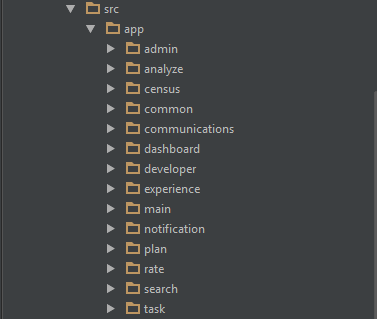
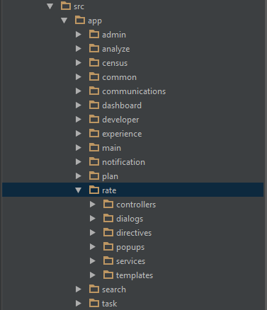
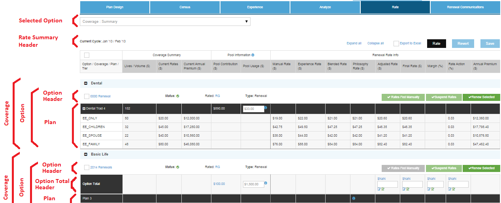
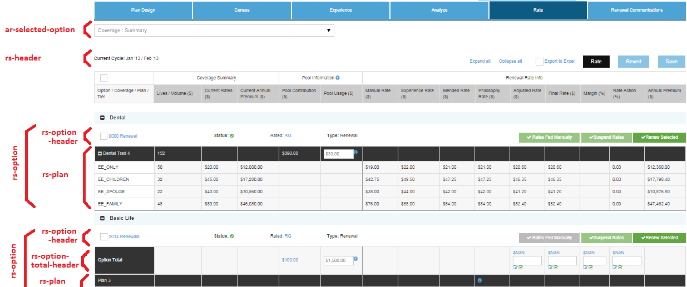

Single Page Apps & Angular Best Practices
VSU 101
Created by Steve Henry
2015 APR 17
Rev 0
SPA Topics
- SPA Web Ecosystem
- HTML5, JavaScript, REST
- CSS Styling
- SPA vs. Traditional Web Apps
- Angular Introduction
- Package Managers
- Task Runners
- Test Frameworks
- Angular Deep Dive
- Architecture & Best Practices
- SPA Framework Comparison
- Angular 2.0
| Package Managers | ||
| MVVM, Routing, Binding, DI | ||
| Styling |
|
|
| Tasks/Dev Ops | ||
| Testing |
DOM: Document Object Model
Cross-platform, language-independent convention for HTML.
Creates DOM tree of elements (nodes):

Parsing and Rendering flow:

Modifying DOM => re-flow (layout), re-paint (draw)
jQuery & Manipulating the DOM
jQuery: JavaScript library for manipulating DOM, event handling, AJAX...
Bubble-based Enthusiasts
This article describes the inverse ratio of bubble-productivity to monkey-separation
Example: Change text in an element using DOM manipulation
document.getElementById("title").innerHTML = "The Bubble Thesis";
Example: Change text in an element using jQuery
$("#title").html("The Bubble Theorem");
HTML5
Provides additional feature set:
- <canvas>: 2D drawing
- <video>: timed video playback
- Semantic tags: <aside>, <article>, <header>, <footer>
- Form controls: email, url, number, dates and times
- Web storage: key-value local storage (larger capacity than cookies)
- Drag'n'drop
- Geolocation: standard location API
- Offline web applications
- SVG (scalable vector graphics)
- XML-based, scalable/zoomable (no loss), animate, image search
- Define paths, shapes, text, painting, clipping/masking...
JavaScript
- Dynamic client-side programming language
- Functional language (functions are first-class citizens)
- Prototypical inheritance
History:
- Created by Brendan Eich of Netscape, called Mocha
- Renamed later to LiveScript
- Renamed again to JavaScript (Dec 1995)
- Netscape 2.0 released with JavaScript support (Mar 1996)
- Microsoft creates compatible dialect JScript for IE 3.0 (Aug 1996)
- Netscape hands over JavaScript to 'ECMA International' to standardize: ECMAScript
- Current version: 5 - ECMAScript 6 release in 2015
RESTful Web Services
Representational State Transfer is a set of principles:
- URI resource identification
- Uniform interface: GET, POST, PUT, DELETE
- Self-describing messages: add metadata, decouple representation
- Stateful interaction via hyperlinks
- Stateless interaction with resources
- Request messages are self-contained
- State exchange via URI params, cookies, hidden form fields...
HTTP Response Status Codes
ALL REST API responses should deliver proper status code, so client knows how to handle
- 200: OK
- 400: Bad Request
- 401: Unauthorized
- 403: Forbidden
- 404: Not Found
- 410: Gone
- 418: I'm a teapot (returned by teapots requested to brew coffee)
- 500: Internal Server Error
- 502: Bad Gateway
- 504: Gateway Timeout
var tradeRes = $resource('api/trade/:id');
function getTrade(tradeId) {
tradeRes.get( {id: tradeId} ).$promise.then(function(result) {
console.log("Received trade! " + result);
}, function(error) {
console.log("Trade failed! Redirecting to home page...");
});
}
Cascading Style Sheets (CSS)
- Separates
content (HTML) & presentation (CSS)
Without CSS (BAD)
I'm not styled correctly
With CSS (GOOD)
I'm styled correctly!
.main-paragraph {
color: red;
}
.primary-button {
width: 50px;
height: 20px;
margin: 5px;
}
.primary-button:hover {
backgroundColor: #006db9;
}
SASS, SCSS, LESS
Scripting languages that interpret into CSS.
- SASS: Syntactically awesome style sheets
- SCSS: Sassy CSS (aka. SASS v3)
- LESS
- Features: Variables, Nesting, Mixins, Inheritance
SASS Variables - Example
Use variables to identify key values in a single declaration.
$primary-font: Helvetica, sans-serif;
$primary-color: green;
.button-primary {
color: $primary-color;
font: $primary-font;
}
SASS Nesting - Example
Use Nesting to group cascaded styles, for easier viewing.
// Without nesting
nav a {
padding: 6px 12px;
}
nav li {
color: $primary-color;
}
// With nesting
nav {
a {
padding: 6px 12px;
}
li {
color: $primary-color;
}
}
SASS Mixins & Inheritance - Example
Use Mixins to re-use blocks of CSS declarations.
@mixin colored-button($radius, $bkgColor) {
border-radius: $radius;
font: Helvetica;
color: $primary-color;
backgroundColor: $bkgColor;
padding: 5px;
margin: 2px;
:hover {
backgroundColor: lighten($bkgColor, 50%);
}
}
// Use the mixin when defining new styles
.button-secondary {
@include( colored-button(1px, blue) );
}
// Inherit and extend another CSS class
.button-secondary-small {
@extend .button-secondary;
font-size: 50%;
}
Traditional Web Apps - Lifecycle
- Every request makes a round trip to & compiled on server
Single Page Apps (SPA) - Lifecycle
- All JavaScript downloaded on first request
- All routing and page-compiling down client-side
What is Angular.js

- Single Page App (SPA) Framework
- Client-side Routing
- Data Binding
- MVVM Framework
- Dependency Injection
- HTTP/REST Library
- Animations
The Most Basic Angular Page
Declare an ng-app attribute in the body tag
<!DOCTYPE html>
<html>
<head>
<title>Angular Example</title>
</head>
<body ng-app="mainApp">
<script src="angular.js"></script>
</body>
</html>
Expressions
Anything inside {{expression}} will be evaluated
<!DOCTYPE html>
<html>
<head>
<title>Expression Example</title>
</head>
<body ng-app="mainApp">
{{ 1+2 }}
<script src="angular.js"></script>
</body>
</html>
Data Binding
Angular will attempt to evaluate data bindings inside {{variable}}.
- Can place on scope inside Controller: $scope.name
- Bind field to variable: ng-model="name"
<!DOCTYPE html>
<html>
<head>
<title>Data Binding Example</title>
<script src="angular.js"></script>
</head>
<body ng-app="mainApp">
<input ng-model="name" />
<p>
Hello: {{name}}
</p>
</body>
</html>
Controllers
Controllers are actually 'ViewModels' that:
- Expose variables via: $scope.varName
- Depend on and call Services (business logic layer)
<body ng-app="mainApp">
<div ng-controller="homeCtrl">
<input ng-model="bestBossEver.name" />
<p>
Hello: {{bestBossEver.name}}
</p>
</div>
<script src="angular.js"></script>
<script src="homeCtrl.js"></script>
</body>
</html>
// homeCtrl.js
mainApp.controller('homeCtrl', function($scope) {
$scope.bestBossEver = {
name: 'Dan Bosman',
awards: [ 'Pinnacle', 'Top 1%', 'Like, 6 others' ],
longestSneeze: 250
};
};
Filters
Apply filter to expression: {{ expression | filterName }}
Built-in filters: currency, date, json, limitTo, lowerCase, number, uppercase
Hello: {{bestBossEver.name | uppercase}}
Longest Sneeze: {{bestBossEver.longestSneeze | time}}
// timeFilter.js
mainApp.filter('time', function() {
return function(timeMs) {
if (timeMs === undefined || timeMs < 0) {
return "";
}
if (timeInt < 1000) {
return timeInt + "ms";
}
return (timeInt / 1000) + "sec";
};
}
ng-Repeat
Iterate over items using:
- ng-repeat="item in varName.arrayName"
Best boss ({{bestBossEver.name}})'s awards:
- {{ award }}
// homeCtrl.js
mainApp.controller('homeCtrl', function($scope) {
$scope.bestBossEver = {
name: 'Dan Bosman',
awards: [ 'Pinnacle', 'Top 1%', 'Like, 6 others' ],
longestSneeze: 250
};
};
Filtering & Ordering ng-Repeat
Syntax: ng-repeat="item in varName.Items | filter: filterName | orderBy: 'varName.fieldName'"
<table>
<tr> ng-repeat="env in environments | filter: liveEnvironments | orderBy: 'env.name'">
<td>{{ env.name }}</td>
<td>{{ env.upTime }}</td>
</tr>
</table>
// envCtrl.js
mainApp.controller('envCtrl', function($scope) {
$scope.environments = [
{ name: 'PROD', upTime: 1.00, isLive: true },
{ name: 'PAT', upTime: 0.88, isLive: true },
{ name: 'SIT', upTime: 0.60, isLive: false },
{ name: 'DEV', upTime: 0.20, isLive: true }
];
};
Client-side Routing
All Angular-routing starts with '#' character
- http://valservices.com/#/pageName
The page routed to will populate the ng-view tag
<!-- index.html -->
<body ng-app="mainApp">
<script src="angular-route.js"></script>
<div ng-view />
</body>
// app.js -- import 'ngRoute' module for Routing
var mainApp = angular.module('mainApp', ['ngRoute']);
mainApp.config(function($routeProvider){
$routeProvider.when('/home',{
controller: 'homeCtrl',
templateUrl: 'home.tpl.html'
})
.otherwise({redirectTo: '/'});
});
Route Params
// app.js
mainApp.config(function($routeProvider){
$routeProvider.when('/',{
controller: 'homeCtrl',
templateUrl: 'home.tpl.html'
}).when('/profile/:id',{
controller: 'profileCtrl',
templateUrl: 'profile.tpl.html'
})
.otherwise({redirectTo: '/'});
// profileCtrl.js
mainApp.controller('profileCtrl', function ($scope, $routeParams) {
$scope.userId = $routeParams.id;
});
The current user ID is: {{userId}}
Package Managers
- Node Package Manager (NPM)
- Bower
Node Package Manager (NPM)
- For server side dependencies for front-end dev
- Define dependencies in package.json
- Common dependencies and devDependencies
{
"name": "SPA-Angular-Web",
"version": "1.0.0",
"description": "VS University: Single Page Apps, Angular, Web Ecosystem",
"homepage": "",
"subdomain": "",
"main": "js/reveal.js",
"scripts": {
"test": "grunt test",
"start": ""
},
"author": {
"name": "Steve Henry",
"email": "steven.henry@tdsecurities.com",
"web": ""
},
"repository": {
"type": "git",
"url": ""
},
"engines": {
"node": "~0.10.0"
},
"dependencies": {
"underscore": "~1.5.1",
"express": "~2.5.9",
"mustache": "~0.7.2",
"socket.io": "~0.9.16"
},
"devDependencies": {
"grunt-contrib-qunit": "~0.5.2",
"grunt-contrib-jshint": "~0.6.4",
"grunt-contrib-cssmin": "~0.4.1",
"grunt-contrib-uglify": "~0.2.4",
"grunt-contrib-watch": "~0.5.3",
"grunt-sass": "~0.14.0",
"grunt-contrib-connect": "~0.8.0",
"grunt-autoprefixer": "~1.0.1",
"grunt-zip": "~0.7.0",
"grunt": "~0.4.0",
"node-sass": "~0.9.3"
},
"licenses": [ {
"type": "MIT",
"url": ""
} ]
}
NPM Commands
npm install
- install all packages from package.json
npm install [-g] package_name [--save-dev]
- install specific package
- [-g]: install package globally
- [--save-dev]: install package & save to packages.json
Bower
- For client side dependencies
- Define in bower.json
- Common dependencies and devDependencies
{
"name": "transparency-etrader",
"version": "0.0.1",
"_comment": "",
"devDependencies": {
"angular-resource": "1.2.15",
"angular-mocks": "1.2.15",
"angular-sanitize": "1.2.15",
},
"dependencies": {
"angular": "1.2.15",
"bootstrap": "3.1.1",
"angular-ui-router": "0.2.10",
"angular-upload": "~1.0.11"
"jquery": "1.8.2",
"jqgrid": "4.6.0",
"ng-file-upload": "1.5.1",
"moment": "2.6.0",
"datatables": "1.10.0",
"components-font-awesome": "4.1.0"
},
"authors": [
"Steve Henry <steven.henry@tdsecurities.com>"
],
"description": "User-facing eTrading web application",
"main": "src/app/app.js",
"license": "None",
"private": true,
"ignore": [
"**/.*",
"node_modules",
"bower_components",
"vendor",
"test",
"tests"
],
"resolutions": {
"jquery": "1.8.2"
}
}
Bower Commands
bower install
- install all packages from bower.json
bower install [-g] package_name [--save-dev]
- install specific package
- [-g]: install package globally
- [--save-dev]: install package & save to bower.json
Task Runners
For running Dev Ops tasks
- Grunt
- Gulp
Task Examples
| wiredep | Add 'script' and 'link' tags to index.html for all source code & 3rd party library javascript & css files |
| styles | Compile SCSS/SASS into CSS |
| clean | Clean output 'build' folder |
| templateCache | Pre-compile HTML partials (templates) to serve up on first load of website (for faster loading on first call) |
| fonts | Copy fonts to output 'build' folder |
| images | Copy images to output 'build' folder |
| vet | Run 'jshint' and 'jscs' to analyze javascript for errors and syntax/style issues |
| test | Execute client-side unit tests |
| minify | Optimize javascript for production by shrinking all method/variable names to 1 or 2 characters |
| concat | Concatenate all javascript & CSS source code files and 3rd party libraries into a single/group of files for each |
| watch | Watch javascript & CSS files for any changes, and immediately re-compile and re-serve to browser |
| browser-sync | Synchronize all open browsers to click/scroll to same position |
| serve | Run a local web server to serve up, watch, and build files |
| image-min | Compress images to a specific size range |
| bump | Increment the output build number |
How Does Gulp Work?
- Extensive set of 3rd party plugins you can import (NPM & RequireJS)
- Define set of custom tasks, with other task dependencies (hierarchy)
- gulpfile.js for task definitions
- gulp.config.js for config
- 'src', 'pipe', 'dest' functions
- Uses 'Node streams'
Syntax:
gulp.task('taskName', ['taskDependency1', 'taskDependency2'], function() {
// task implemention
// use 'src', 'pipe', 'dest'
});
gulpfile.js & gulp.config.js
module.exports = function() {
var client = './src/client';
var clientAssets = client + 'assets/';
var server = './src/node-server/';
var temp = './.tmp/';
// Import using RequireJS
var wiredep = require('wiredep');
var config = {
alljs: [
'./src/**/*.js',
'./*.js'
],
scss: clientAssets + 'scss/**/*.scss',
css: temp + '**/*.css',
build: './build/',
optimized: {
app: 'app.js',
lib: 'lib.js'
}
};
};
var gulp = require('gulp');
var config = require('./gulp.config')();
var $ = require('gulp-load-plugins')( {lazy: true} );
gulp.task('build', ['wiredep', 'images', 'fonts', function() {
log('Building everything...');
});
gulp.task('wiredep', ['styles', 'templateCache'], function() {
var options = config.getWiredepDefaultOptions();
var wiredep = require('wiredep').stream;
return gulp
.src( config.index )
.pipe( wiredep(options) )
.pipe( $.inject( gulp.src(config.css) ) )
.pipe( gulp.dest( config.client ) );
});
Gulp v. Grunt
We use Gulp, due to a couple key features/optimizations:
Node Streams
Output from every stage is 'piped' using an in-memory stream to the next stage. Grunt uses file I/O between every step (slow)
Parallel Dependency Running
All the dependencies are run in parallel in Gulp (serial in Grunt [slower])
Cleaner Syntax
Grunt uses a more 'convention-oriented' syntax. Gulp is 'configuration-oriented', and reads like code ('src', 'pipe', 'dest')Testing
Karma
Adding to the project:
npm install karma --save-dev
- Test Runner for JavaScript
- Uses NodeJS to serve pages, PhantomJS as headless browser
- Handles launching/killing of browsers to run Test Cases
- Produces Test Reports
- Supports cross-browser testing
- Integrates with CI tools
Jasmine
Adding to the project:
npm install jasmine --save-dev
- Behavior-driven development (BDD) test framework
- Write test cases, assertions
- Mocking
- Test using: describe(), it(), expect()
- Can 'nest' describes
mainApp.factory('permissionService', function() {
return {
hasDevPermissions: hasDevPermissions,
hasTraderPermissions: hasTraderPermissions
};
};
Tests
describe('permissionService: ', function() {
var permissionSvc;
var testGroups; // permission groups (test data)
beforeEach(function() {
module('mainApp');
inject(function(permissionService) {
permissionSvc = permissionService;
)};
testGroups = [ FO: { enabled: false }, DEV: { enabled: false },
TRADER: {enabled: true }; ];
});
afterEach(function() { } );
it('should disallow DEV permissions for non-developer', function() {
expect(permissionSvc.hasDevPermissions(testGroups)).toBeFalsy();
});
it('should allow TRADER permissions for traders', function() {
expect(permissionSvc.hasTraderPermissions(testGroups)).toBeTruthy();
});
});
Angular Best Practices Topics
- Project Structure
- Decomposition with Services
- Decomposing Navigation
- Changing States
- Resolving & Injecting Params
- Decomposing Controllers
- Writing Controllers
- Refactoring into Services
- Decomposition with Directives
- Writing & Refactoring into Directives
- Isolated Scopes
Common Goal: Decomposition!
- Single Responsibility
- Dependency Injection
- Loose Coupling
- Testable Components
- (Avoid Dev Overlap & Merge Conflicts)
“When I change functionality or add a feature, it should only affect a single, isolated section of code”
Project Structure
- Modules
- File Types
- Naming Conventions
Project Structure
Break out application root into folders by module.
Module Structure
Break out modules into folders by type of component.
"Common" Structure
Break out "common" into folders by type of component.
File Naming Convention
Controllers
- 'Ctrl' suffix
- ex. rsRateSummaryCtrl.js
Services
- 'Service' suffix
- ex. rsSaveDataService.js
HTML Partials/Templates
- Name should match controller
- '.tpl.html' file type
- ex. rsRateSummary.tpl.html
Directives
- No suffix or prefix
- ex. rsOptionRow.js, rsOptionRow.tpl.html
Makes it clear what type of file it is.
Module Naming Convention
Use module prefix for all module names.
ex. For 'rate summary', use 'rs':
- rsSomeController.js
- rsSomeTemplate.tpl.html
Prevents naming collisions between modules.
Decomposition with Services
Revealing Module Pattern
// Use 'factory' to create services
mainApp.factory('rsSaveDataService.js', function(userService) {
// Declare variables at top
var VALID_GROUPS = ['Underwriter'];
// Return the 'interface' of public functions (REVEALING MODULE PATTERN)
return {
// Expose function with same name
saveDataToDb: saveDataToDb,
saveDataLocally: saveDataLocally
};
function saveDataToDb(task) {
// save to db
}
function saveDataLocally(task) {
if ( userService.isMemberOf(VALID_GROUPS) ) {
updateMasterTask(task); // save locally
}
}
// Private function -- NOT exposed
function updateMasterTask(task) {
}
});
Only want public functions exposed.
Provides clear definition of what methods to test.
Testing Services
describe('rsSaveDataService: ', function() {
var validTask, taskWithNoCoverages, userServiceMock;
var isMember;
beforeEach(function() {
module('mainApp'); // Must declare angular module to use
createTestData(); // Reset test data
createMocks(); // Create mock service dependencies
}
function createTestData() {
taskWithNoCoverages = { name: 'EmptyCustomer', coverages: undefined };
validTask = { name: 'ValidCustomer',
coverages [ { name: 'LTD', id: 1 },
{ name: 'STD', id: 2 } ]};
isMember = false;
}
function createMocks() {
// Mock the functions that would normally be called
// Return a value that can be locally changed between test expectations
userServiceMock = { isMemberOf: function() { return isMember; } };
// Tell the Angular injector to provide the mock whenever
// 'userService' is requested
module(function($provide) {
$provide.value('userService', userServiceMock);
});
}
// BDD: group common tests further
describe('local saving: ', function() {
it('should return false if the task has no coverages',
inject(function(rsSaveDataService) {
// Prep response from mock
isMember = false;
// Call public function to test
expect( rsSaveDataService.saveDataLocally(taskWithNoCoverages) )
.toBe(false);
});
it('should return true if the task has at least 1 coverage',
inject(function(rsSaveDataService) {
// Prep response from mock
isMember = true;
// Call public function to test
expect( rsSaveDataService.saveDataLocally(validTask) )
.toBe(true);
});
});
describe('database saving: ', function() {
// write tests
});
});
Replace service's injected dependencies using '$provide'.
Write unit tests for each 'public' function.
Use nested 'describe' to break BDD test groups down further.
Decomposing Navigation
Injecting Resolved Variables
// Inject any 'pre-resolved' values along with the Services
// ie. 'userGroups', 'task', 'selectedOptionId'
mainApp.controller('taskCtrl',
function(taskService, userGroups, task, selectedOptionId) {
// Use the pre-solved variables
$scope.currentTask = task;
$scope.selectedOptionId = selectedOptionId;
});
Values from $stateProvider 'resolve:' are available to be injected.
Writing Controllers & Services
What NOT to do in Controllers
mainApp.controller('taskCtrl',
function(optionService, userService, commonDialogService,
userGroups, task, selectedOptionId) {
// Do NOT do this (putting business logic in controller)
$scope.saveData = function() {
if (!$scope.isRenewalPremiumValid($scope.displayTask)) {
return;
}
var savePromiseDeferred = $q.defer();
// Save the updated MODEL task to the DB
optionService.updateOptions($scope.displayTask)
.then(function () {
// SUCCESS
$log.log('Update successful for TaskId: ' + displayTask.id);
var isUnderwriter = userService.hasGroupMembership(['UNDERWRITER']);
if (isUnderwriter) {
checkForUnderWriterEditability(displayTask.renewalDate);
}
savePromiseDeferred.resolve();
},
function (error) {
// FAIL
$log.log('Update failed for TaskId: ' + displayTask.id);
var errorStr = (typeof error === 'object' &&
error.status === 'Error')
? SAVE_FAILED : SERVER_ERROR;
commonDialogService.errorDialog(error.msg, errorStr);
savePromiseDeferred.reject(error);
}
);
return savePromiseDeferred.promise;
}
/**
* check for currentRenewalPremium against AnnualRenewalPremium.
* If currentRenewalPremium < AnnualRenewalPremium return errorFlag = true
*/
function isRenewalPremiumValid(displayTask) {
var currentAnnualPremium = 0;
var minimumAnnualPremium = 0;
for (var i = 0; i < displayTask.coverages.length; i++) {
var coverage = displayTask.coverages[i];
for (var j = 0; j < coverage.options.length; j++) {
var option = coverage.options[j];
for (var k = 0; k < option.rates.length; k++) {
var rate = option.rates[k];
if(rate.type === 'Minimum') {
minimumAnnualPremium = rate.annualPremium;
}
else if (rate.type === 'Current') {
currentAnnualPremium = rate.annualPremium;
}
}
if (currentAnnualPremium < minimumAnnualPremium ) {
// FAIL. Does NOT pass requirements. Show error dialog.
var errorObj = {status: "Error",
msg: "Requested change has resulted in a Renewal Premium that is below the minimum allowed for the coverage " +
coverage.underwritingProduct};
showSaveErrorDialog(errorObj);
return false;
}
}
}
return true; // premium is OK
}
/**
* On successful save, checks to see if the underwriter can make edits based on whether the renewalDate is within 6 months of current date.
*/
function checkForUnderWriterEditability(renewalDate) {
var sixMonthsFromRenewalDate = moment(renewalDate).add('months', 6);
if ((new Date() >= renewalDate && new Date() <= sixMonthsFromRenewalDate)) {
//show message that they will not be able to make edits to the task,
// 6 months from the override anniversary/renewal date.
// If no value is present for override anniversary/renewal date,
// use the value stored in anniversary/renewal date instead.
commonDialogService.alertDialog("You will not be able to make " +
edits to this task 6 months from the Renewal Date");
}
}
});
What 'SaveData()' actually does:
- Check valid renewal premium
- Check if Underwriter is eligible
- Save all options
- Show error dialog if fails
Writing Controllers
-
Treat Controllers as "ViewModels"
- Only use to "wire up" the view
-
Do not use 'promises' on load
- Should be done with $stateProvider
-
All business logic goes in 'Services'
- Decompose into single responsibility
- Easy to unit test
Refactoring Controllers
mainApp.controller('taskCtrl',
function(rsSaveDataService, userGroups, task, selectedOptionId) {
// NOTICE: now injected only 1 service (rsSaveDataService) instead of 3
$scope.saveData = function() {
if (!rsSaveDataService.isRenewalPremiumValid($scope.displayTask)) {
return;
}
var promise = rsSaveDataService.saveDataToDb($scope.displayTask);
};
});
What 'SaveData()' does now:
- Call service to check if valid renewal premium
- Call service to save data
Refactored Save() into New Service
mainApp.factory('rsSaveDataService', function(optionService, userService) {
return {
// ** Unit test these 2 methods !!
saveDataToDb: saveDataToDb,
isRenewalPremiumValid: isRenewalPremiumValid
};
function saveDataToDb() {
// Save the updated MODEL task to the DB
optionService.updateOptions($scope.displayTask)
.then(function () {
// SUCCESS
$log.log('Update successful for TaskId: ' + displayTask.id);
var isUnderwriter = userService.hasGroupMembership(['UNDERWRITER']);
if (isUnderwriter) {
checkForUnderWriterEditability(displayTask.renewalDate);
}
savePromiseDeferred.resolve();
},
function (error) {
// FAIL
$log.log('Update failed for TaskId: ' + displayTask.id);
// ** Moved into 'declarative' method
showSaveErrorDialog(error);
// ** BEFORE
//var errorStr = (typeof error === 'object' &&
// error.status === 'Error')
// ? SAVE_FAILED : SERVER_ERROR;
// commonDialogService.errorDialog(error.msg, errorStr);
savePromiseDeferred.reject(error);
}
);
return savePromiseDeferred.promise;
}
function showSaveErrorDialog(error) {
var errorStr = (typeof error === 'object' &&
error.status === 'Error') ?
SAVE_FAILED : SERVER_ERROR;
commonDialogService.errorDialog(error.msg, errorStr);
}
/**
* check for currentRenewalPremium against AnnualRenewalPremium.
* If currentRenewalPremium < AnnualRenewalPremium return errorFlag = true
*/
function isRenewalPremiumValid(displayTask) {
var currentAnnualPremium = 0;
var minimumAnnualPremium = 0;
for (var i = 0; i < displayTask.coverages.length; i++) {
var coverage = displayTask.coverages[i];
for (var j = 0; j < coverage.options.length; j++) {
var option = coverage.options[j];
for (var k = 0; k < option.rates.length; k++) {
var rate = option.rates[k];
if(rate.type === 'Minimum') {
minimumAnnualPremium = rate.annualPremium;
}
else if (rate.type === 'Current') {
currentAnnualPremium = rate.annualPremium;
}
}
if (currentAnnualPremium < minimumAnnualPremium ) {
// FAIL. Does NOT pass requirements. Show error dialog.
var errorObj = {status: "Error",
msg: "Requested change has resulted in a Renewal Premium that is below the minimum allowed for the coverage " +
coverage.underwritingProduct};
showSaveErrorDialog(errorObj);
return false;
}
}
}
return true; // premium is OK
}
/**
* On successful save, checks to see if the underwriter can make edits based on whether the renewalDate is within 6 months of current date.
*/
function checkForUnderWriterEditability(renewalDate) {
var sixMonthsFromRenewalDate = moment(renewalDate).add('months', 6);
if ((new Date() >= renewalDate &&
new Date() <= sixMonthsFromRenewalDate)) {
// show message that they will not be able to make edits to the task,
// 6 months from the override anniversary/renewal date.
// If no value is present for override anniversary/renewal date,
// use the value stored in anniversary/renewal date instead.
commonDialogService.alertDialog("You will not be able to make " +
"edits to this task 6 months from the Renewal Date");
}
}
});
- Rule: If '$scope' not used, it is business logic => use a Service
- Service becomes a fully isolated component
- Single Responsibility: "verify save data is valid, and save it"
Defining a Service
Find a single responsibility for the service,
and be able to describe it in a sentence:
dmdsCanEditCurveService
- Determines if curves can be edited
dmdsSaveQuoteService
- Validates & saves curves to the server
dmdsInitializationService
- Initializes curves to an easy to display format
userService
- Stores and checks the current user's permissions
If specific to module, prefix it (ex. 'dmds') and keep in module.
If it can be shared, place in '/common', with no prefix.
Writing Directives
- When to use directives
- How to write them
- How to test them
When To Use Directives
- Break down HTML into logical components
Use 'Domain Specific Language' (DSL)
- ie. Break down your code into components that map to their read-world representation
Directives - Rate Summary Example [1]
- Selected Option
- Rate Summary Header
- Coverages (repeat)
- Options (repeat)
- Option Header
- Option Total Header (if >= 2 plans)
- Plan
- Options (repeat)
Directives - Rate Summary Example [2]
Use 'ar' prefix if 'Common' directive (Auto Renewals).
Use 'rs' prefix is specific to module (Rate Summary).
Rate Summary HTML - With Directives
Decomposed into directives for:
- Selected Option, Rate Summary Header, Options
'Option' Directive - HTML
Decomposed 'RateSummary -> Option' into directives for:
- Option Header, Option Total Header, Plans
NOTE: Directives declared (in .js) as camelcase,
but written in HTML as snake-case (with hyphens).
- js: recalculateRates() -> html: recalculate-rates()
'Option' Directive & Controller
mainApp.directive('rsOption', function() {
return {
restrict: 'E', // directive in an HTML 'element'
replace: true, // replace 'rs-option' HTML element with template
templateUrl: 'rate/templates/rsOption.tpl.html', // HTML template
controller: 'rsOptionCtrl', // controller for directive
scope: { // *isolated* scope (since {} )
option: '=', // 2-way binding to 'option' variable
recalculateRates: '&' // function passed in from parent
}
};
});
mainApp.controller('rsOptionCtrl', function($scope) {
// Show Option Total row if 2 or more plans
$scope.isOptionTotalRowVisible = $scope.option.plans >= 2;
});
Inject Service dependencies into new directive controller
Directives - Isolated Scopes
3 types of 'scopes':
Shared
- At same level as parent
Inherited
- Inherit parent's scope, but parent cannot see you
Isolated
- Self-contained scope -- can only see variables and functions passed in
Almost always, use isolated scopes.
Describes an interface's dependencies.
Avoid "assumptions" of parent scopes.
Prevents "tight coupling".
Angular Summary
Break up app folders into Module, then component Type
- ex. Rates -> Controllers, Templates, Directives, Filters, Services
Prefix Module files with 2 module letters
- ex. Rates module -> rsDataSaveService [ie. 'rs']
When changing states, load async variables with 'resolve:' in $stateProvider
Use Controllers as View Models only
- ie. Only use it to "wire up" the view templates
Put all business logic in single responsibility services
Use 'revealing module pattern' to expose public functions in services
Use Directives to break up HTML into smaller components
- ex. Coverages, Options, Plans, Header
Use 'isolated scopes' when creating directives
- Pass in the minimal set of required params
SPA Framework Comparison
Knockout & Durandal vs. Angular
- Knockout: mostly only provides bindings
- Durandal: jQuery + Knockout + RequireJS (DI)
- Binding - must convert a POJO to an Observable object, then back again
- Dep. Injection - requires 3rd party library (RequireJS)
- Durandal creator left to join Angular 2.0 team
React vs. Angular
- React is an implement of ECMAScript 6 web components - which is equivalent to Angular directives
- NOT an SPA framework
Angular 1.x Issue: Data Binding Updates w/ 1000+ in Scope
- Angular uses 'dirty checking': check every item whenever any variable changes
- React uses a 'virtual DOM': keeps a duplicate copy of the DOM, and only requests actual DOM changes needed to update
- Angular 2.0 solves this with new implementation - typically faster than React
Ember vs. Angular
Ember is a full featured SPA framework
- Dep. Injection: required dependencies are optional to inject; no constructor injection; no circular dependency checking
- Data Binding: relies on 'Handlebars' 3rd party library; ugly syntax
- Community Support: Angular is backed by Google, and larger dev community
Angular 2.0
- Change Detection: massively improved, supports 1000+ items
- New router (ui-router): states with inheritance
- TypeScript: recommended use; class-like structure; compile-time checking
- i18n: support for internationalization
- ngAnimate: lots of new animation support
- Nearly a full re-write with framework-wide breaking changes
| Package Managers | ||
| MVVM, Routing, Binding, DI | ||
| Styling |
|
|
| Tasks/Dev Ops | ||
| Testing |